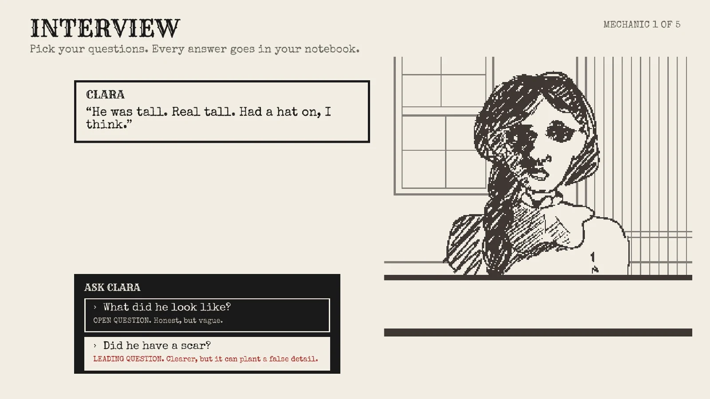
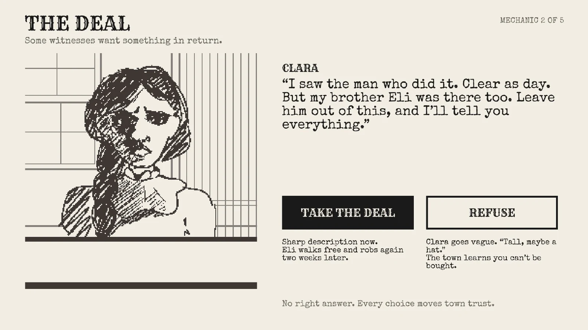
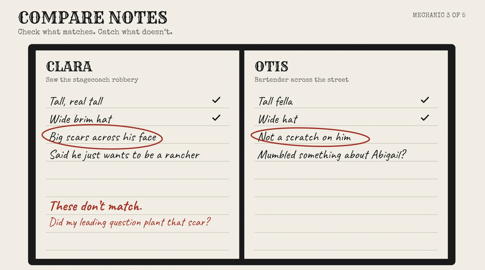
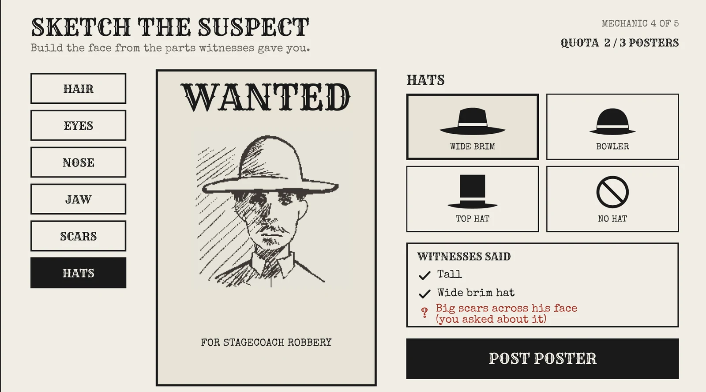

By Witness
A story driven game where you play a sketch artist in a corrupt Old West town, and one wrong question can put an innocent man on a poster.
- Year
- Oct 2026 to presentWraps up end of fall quarter
- Role
- Team lead, game designer
- Team
- Bryant Le, Matthew Nguyen, Kristy Le
- Tools
- FigmaINFO 498, UW

(01)
Overview
Most games about crime put you in charge. You catch the bad guy and the story ends. We wanted to flip that.
In By Witness, the truth depends on what scared, paid off, or confused people tell you. And the system around you rewards speed over getting it right. We wanted players to leave asking who actually decides what justice looks like, and what it costs to do the right thing when the easy thing pays off right now.
(02)
Who it's for
See every outcome
Multiple endings based on your choices, plus story clues about what really happened to the last sheriff.
Beat the game
Cases that get harder each week, a case record board, and a reveal after every poster.
Both get the same message. Explorers find it by trying different paths. Achievers find it by trying to get every case right and realizing the system makes that hard.
(03)
Core loop
(04)
Design decisions
Good questions vs fast questions
Open questions get honest but vague answers. Leading questions get clear answers but can plant false details. The fastest option is also the riskiest.
Bribes vs moral decisions
Bribes are clearly wrong. Moral decisions have no right answer. If every choice were a bribe, players would refuse everything and feel good about it.
A quota that rewards speed
The quota counts posters, not correct posters. Nobody checks if you drew the right face. That pressure is what makes bribes tempting.
(05)
One case, five screens
Following Clara, a witness to a stagecoach robbery, through the whole game loop.




(06)
How it changed
Iterations
- Started as "Likeness," a sketch artist drawing wanted posters. A fun mechanic with no message.
- Added a social impact angle: a corrupt town and a system that rewards speed over truth.
- Renamed it By Witness to focus on witnesses and unreliable memory.
What I learned
- Consequences teach better than rules.
- A choice needs a cost on both sides.
- The system is the message.
- Leading a team means making calls.
Playtesting is next. I'm walking classmates through these screens and will update this page with what I changed.
Next project
The Ticket →